2027
Produkční strategie NOXGAMES. Tři větve, jeden společný základ, až pět nových titulů.

Program
AProč a co: tři větve, pět titulů5 min
BSdílený základ: City V2 a SharedGameBackend7 min
CMF-branch: reskiny4 min
DHexapolis: ověřit, pak Hexapolis 210 min
ENová strategická větev6 min
FCPI testy, roadmapa, rozhodnutí10 min
Tři větve, jeden základ
MF-branch
Recept na rychle splatnou hru máme ověřený. Gameplay neměníme, měníme témata.
2 až 3 reskinyHexapolis
City V2, PvP a UGC nejdřív do původního Hexu. Když to hráči chtějí a platí, navrhneme Hexapolis 2.
ověření, pak Hex 2Strategická větev
Nové hry mezi Hexem a MF. Víc idle, větší rozhodnutí, PvP tam, kde přirozeně sedí.
aspoň 2 tituly
Pod všemi hramiCity V2 metaSharedGameBackendMF metaNox ID, klany, leaderboardy
2027: až pět nových titulů
2MF reskinypřípadně třetí, pokud CPI ukáže silné téma
+
2strategické titulyz prototypů, které projdou greenlightem
+
1Hexapolis 2jen pokud projde ověření v původním Hexu
5nových titulůnahradí slábnoucí hry z roku 2026
Všechny stojí na tom, co už máme. S AI a workflows je to zvládnutelné bez velkého neověřeného rizika.
Hexapolis je moc složitý, Mecha Fortress moc jednoduchý
Mecha Fortress
jednoduchý, rychle splatný, hráč musí dávat pozor mezi zápasy
Strategická větev
víc idle, ale větší rozhodnutí; PvE i PvP
Hexapolis
plná civilization-like strategie, zůstává složitý a tahový
Hex neměníme na idle hru. Idle strategie patří do nové větve.
City V2: jedno město pro všechny hry
Meta mimo gameplay, inspirace Rise of Kingdoms a Clash of Clans. City V2, Mapa V2 a Město V2 jsou stejná feature.
1Zápashráč hraje hru a dostane suroviny
2Produkcestaví pilu, lom, důl, farmu
3Další budovyprodukce a progres ve hře odemknou stavbu a levely
4Odemčeníjednotky, upgrady, vylepšení základní hry
5Zpět do zápasusilnější a s důvodem se vracet
Hra posílá do města
suroviny ze zápasů, měnu, progres hráče, herní události
Město vrací hře
odemčené jednotky, permanentní upgrady, boosty, odměny; později armádu
Město jako sociální vrstva napříč tituly
MVP · XI až XII 2026
- Vesnice, 3 až 4 produkční budovy
- budovy, které odemykají jednotky a upgrady
- volné umístění, pár dekorací
Hloubka · Q1 2027
- personalizace, erb, vzhled města
- rasy podle tematiky
- víc budov, IAP sinky
Sociální · od Q2 2027
- globální mapa měst ostatních hráčů
- návštěvy, porovnávání, armády a útoky
- klany přes SharedGameBackend
Kde poběžíMF reskinypůvodní HexapolisHexapolis 2strategická větev
SharedGameBackend: všechno pod jednou střechou
Co dává
- Nox ID: sledujeme hráče napříč všemi tituly
- Invite friends, klany, leaderboardy
- Promo kódy a vše, co se dá řešit backendem
- persistence pro City V2 a PvP
Proč vlastní
- na míru našim hrám, integrovaný do všech projektů
- ovládaný agenty, cesta k automatizaci live-ops
- stavíme jednou, používají všechny hry
- Mecha Fortress je staging projekt pro SGB, City V2 i PvP
MF-branch: recept máme, měníme témata
1CPI testy témat ještě letos
Spustit do konce 2026, ať v lednu víme, do čeho jdeme.
2Leden: příprava, pak výroba
Stejná kvalita jako dosud, ideálně s něčím navíc.
3City V2 a SGB postupně do reskinů
Jak budou hotové, integrujeme je. Reskin na ně nečeká.
Kandidáti do CPIWarcraft-like fantasyzombiedalší podle trhu
Hexapolis: nejlepší civilization-like na mobilu
City V2
Stavění města mezi zápasy. Hráči ho vždycky chtěli. Tak hluboká meta, jak telefon dovolí.
PvP
Hráči chtějí hrát proti sobě. Tím nás dnes poráží Polytopia a tenhle náskok jde smazat rychle.
UGC
Vlastní mapy, sdílení, live-ops nad nimi. Třešnička na dortu, až po City a PvP.
NechcemeMF meta nasazená na Hex gameplayHex jako pasivní idle hra
Nejdřív ověřit v původním Hexu, pak Hexapolis 2
XI
Vývoj
City V2 + PvPstaging v MF a Hexfortu
XII
Dodání
import do Hexuinterní test
I
Release
k hráčůmkomunitní test, reaktivace
II
Data
vyhodnoceníUGC podle výsledků
H2
Rozhodnutí
gatedo konce února
Hex 2 schválíme, když- hráči stavějí město a vracejí se do něj
- hrají PvP opakovaně
- platí: IAP, případně subscription
Hexapolis 2 pak bude- pořád plný civilization-like
- upravená meta, nejspíš jiná tematika
- od základu pro PvP a dlouhé hraní přes město
PvP v Hexu: návrh pro leden
Async 1v1 jako prvníTah kdykoli, limit 24 h nebo 1 h. Funguje i s malou hráčskou základnou. Live blitz a FFA až podle dat.
Ligy a sezónyGlicko-2, sezóna 4 týdny, ligy od bronzu po mistra. Fronta, tahy a žebříček na SharedGameBackendu.
FérovostV rated PvP normalizované staty, bez bojových boostů z města. Výhoda se v PvP koupit nedá.
Anti-cheatTahy validuje server, replay ze seedu a akcí. Řeší rizika z 24. 9.: cheateři, OP jednotky, PowerProgress.
Odměny do městaZa PvP suroviny do City V2 a kosmetika podle ligy. Obě featury se navzájem táhnou.
Monetizace k ověřeníSubscription nebo PvP pass jako hypotéza, ne jako paywall.
Strategická větev: volný gameplay, pevný základ
Mechabellumkolanákup a rozmístění, pak automatický boj
Clash RoyalePvPkrátké zápasy, balíček, žebříček
Voodoo battleryzákladnazákladna vyrábí vojáky, ti bojují, hráč vylepšuje
Goblin Gold Minersekonomikatovárny a produkce jednotek
Zápas na kola nebo vlny: pár rozhodnutí, itemy, pak sledovat výsledek. Jde snadno PvE i PvP. Pod tím MF meta, City V2 a SGB.
Od nápadu ke greenlightu
1
Koncepty
Game Jam, R&D, trhjednostránková šablona
2
CPI
tematikastejné assety, víc témat
3
Prototyp
max 2 sprintypak pokračovat nebo stop
4
Greenlight
porada vedenípodle metrik
2×
Cíl 2027
2 titulyve výrobě
Prototypování je pravidelná součást plánu, ne jednorázová akce.
CPI testy: aspoň jeden měsíčně
A: témata MF reskinů
- Warcraft-like fantasy, zombie, další
- klasický MF setting
- start do konce 2026
B: Hex 2 a strategická větev
- tematiky: římská, Warcraft-like a další
- jedny základní assety převedené do více tematik
- v MF i Hex settingu, leden 2027
Roadmapa
XI 2026
XII 2026
I 2027
II až III
Q2 až Q4
MF-branch
CPI témat
výběr témat
reskin #1 start
reskin #1 výroba, launch
reskin #2 (a #3)
Hexapolis
City V2 + PvP ve stagingu
import, interní test
release hráčům
data, UGC; gate Hex 2
Hex 2 vývoj, pokud projde
Strategická
sběr konceptů
Game Jam
CPI tematik
prototypy #1, #2
titul #1 výroba, #2 prototyp
Sdílené
SGB do MF
City V2 MVP
City V2 do reskinů
sociální vrstva
Od února orientační. Upřesní se po CPI a lednovém releasu v Hexu.
Co dnes potřebujeme rozhodnout
1Vlastníci
City V2, PvP v Hexu, strategická větev, CPI program.
2Kapacita na listopad a prosinec
Kdo na čem, když běží City V2, PvP, SGB a CPI naráz.
32, nebo 3 reskiny
A čísla pro gate Hexapolis 2.
Otázky?
Wiki: Strategie, Produkční strategie 2027NoxHub: Nové projekty, NOVE-13CPI tests: CPI-13